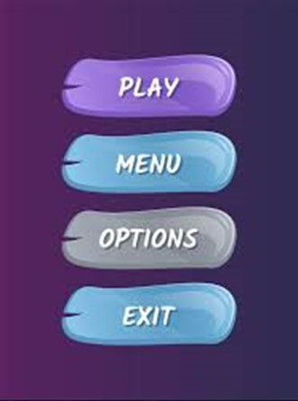

Proftaak
#Freetheflurry ▼
Doelgroep
Ten eerste hebben we vastgesteld wat onze doelgroep is voor het komende product dat we gaan ontwikkelen. Dit zijn jongeren tussen de 13 en 18 jaar. Dit omdat zij op de middelbare school zitten en steeds meer met vrienden gaan doen dan bij hun ouders rondhangen. Zij beginnen ook steeds meer zelf producten aan te schaffen. Denk aan kleding, gadgets en eten. Zij zijn ook een groep die vaak naar een fastfoodrestaurant gaan met in het specifiek de McDonald’s. Dit is tevens de groep die tegenwoordig enorm vaak op hun telefoon zit. Zij het om socialmedia of voor het spelen van casual games.
Daarnaast vind deze leeftijdsgroep het belangrijk erkent te worden voor iets. Zij willen status. Dit beeld wordt flink versterkt door het werk van influencers. Om de aandacht van deze groep te trekken is er dus iets nodig waarmee zij hun prestatie kunnen delen en zo kunnen vergelijken of de een beter is dan de ander.
Inspiratie/Onderzoek
Game
Ik ben gaan zoeken naar andere populaire casual games en die had ik al gauw gevonden. Hieronder zie je drie bekende voorbeelden.
Dit is het dino spelletje op de Google Chrome web browser. Deze verschijnt op het moment dat je geen internet verbinding meer hebt.
Als tweede kwam ik op een gelijk soort spel dat een aantal jaar terug razend populair was.
Dit is Flappy Bird. Het doe van het spel is door zo veel mogelijk riool pijpen heen te vliegen. Des te hoger de score des te beter je bent.
Als derde gaan we wel een aantal jaren terug in de tijd. Desondanks is het nog steeds een populaire game.
Super Mario Bros. is al jaren lang een enorm succesvolle game. Zoals je kunt zien is het weer zo een zelfde soort platformer.
Mario is zelfs op de smartphone uitgebracht.
Alle drie deze spellen hebben één ding gemeen. Ze bewegen van rechts naar links om zo het effect te geven dat je naar rechts loopt. Terwijl dit gebeurd kom je obstakels tegen.
Menu
Omdat we gekozen hebben voor een spel ben ik ook gaan zoeken naar verschillende soorten menu’s.
Zo kwam ik op een aantal willekeurige menu’s die mij wel duidelijk of leuk leken.
De bovenstaande drie menu’s zijn zeer vanzelfsprekend en best “standaard”, daarom ben ik gaan zoeken naar iets wat meer in het spel zit verwerkt.
Dit is echter best chaotisch maar kan goed te gebruiken zijn.
Als laatste heb ik mijn zinnen gezet op een spel dat in 2007 op de console is uit gekomen maar sinds een paar jaar ook te downloaden is in de appstore en googlepla store. Namelijk: GTA San Andreas.
Op de mobiele versie van het spel heeft het een compleet vernieuwd menu speciaal voor de handelingen die je maakt op een smartphone.
Als je op deze knop klikt zie je het eerste interactieve prototype:
Design
Menu
Als eerste ben ik begonnen met het ontwikkelen van een menu. Dit om een soort huisstijl te krijgen rondom het spel dat we gaan ontwikkelen.

Ten eerste heb ik gebruik gemaakt van het kleurenpalette van de McDonald’s. Dit omdat wij een product moeten maken voor de McDonald’s. layouts heb ik gebasseerd op de bovenstaande menu’s. Zo heb ik het rode menu gebasseerd op het paarse menu met blauwe knoppen. Alles staat hier heel simpel onder elkaar. Het witte menu met de gele kaartjes heb ik gebasseerd op het menu van GTA San Andreas. Het groene menu heb ik deels gebasseerd op het paarse menu met blauwe knoppen maar ook op het menu waar een toggle onderin het scherm staat voor het geluid. Ten slotte heb ik het gele menu alleen maar gebasseerd op het menu met de geluid toggle.
Tijdens het maken van de menu’s heb ik aan studenten gevraagd wat zij het beste eruit vonden zien. Wat zij het makkelijkste in navigeren. En welke ook nog een beetje levendig was.
Vooral op de vraag welke levendig was vielen er als snel twee op en twee af, De rode en de groene vielen al gauw af. Daarnaast kreeg ik ook als feedback dat ondanks het gele menu wel wat meer interactie uit lokte dit nogal saai oogte. Waarmee ik dus tot de conclusie ben gekomen het witte menu te gebruiken.
Deze eerste echter nogal kaal. Hier heb ik vervolgens een achtergrond aan gegeven. Daarnaast werd er opgemerkt dat de kaartjes die het menu vormen er heel rommelig uit zagen, dus die ben ik netjes gaan uitlijnen. Dat zie je in onderstaande afbeeldingHier ondervond ik dat het niet zo duidelijk was welk kaartje het geselecteerde kaartje is. Dit ben ik dus ook bij verschillende mensen na gaan vragen, bijvoorbeeld andere studenten, maar ook familie en vrienden. Van deze kreeg ik dit bevestigd en heb hier een volgende iteratie op los gelaten.
Gebasseerd op deze stijl ben ik de rest van het menu gaan ontwikkelen en ben ik tot ed volgende resultaten gekomen.

Game
De achtergrond die je ziet is deel van het spel. De game map daarvan zie je hieronder.


-
Op "Game over story" staat een visual van wat er gebeurt als je dood gaat en hoe dat tot stand komt.
-
Op "Sun closing in" zie je wanneer de zon dichterbij kan komen en wanneer je dus in gevaar loopt.
-
Op "falling through" zie je dat je ook blokken kunt tegen komen om je om de tuin te leiden.
-
Op "ur own damn fault 1 & 2" kun je zien dat je jezelf ook helemaal vast kunt laten lopen. En dat je ook goed op moet letten waar je springt
Nadat ik deze prototypes had gemaakt, heb ik bij een docent om feedback gevraagd, deze was helemaal enthousiast. Echter viel er wel meteen iets op. Er zitten verschillende stijlen in. In volgende iteraties komt er dus een vaste stijl, denk aan: anime, low poly, 8-bit of gewoon een seizoen.

Je ziet de hele tijd deze stijl als map/gamewereld. Echter zie je nog te veel contrast.
Om er meer een thema aan te geven heb ik de stijl verandert naar een gebied. Dit omdat het dan meer overeen komt met de McFlurry als ijsje. De wereld moet dan ook een soort jistijd zijn.
De zon die ik in eerste instantie gebruikt heb was deze. Die viel ook niet binnen het thema, dus heb ik een andere iets simpelere zon gemaakt en deze geanimeerd.
Het spel bevat ook objecten die je moet passeren.
Het uiteindelijke ontwerp is het onderstaande geworden

Als je op deze knop klikt zie je het eerste interactieve prototype:
Powerups
Voor de laatste sprint is er gevraagd of er powerups in de game konden komen. Daarvoor heb ik de designs ontworpen. Hieronder zie je ze onder elkaar staan
Hierboven zie je alle vier de powerups die in de game voor moeten komen.
Als laatste was er een manier nodig om je score te tellen. Daarvoor moet je de "M scores" pakken. Deze heb ik gemaakt uit een "M" McDonalds